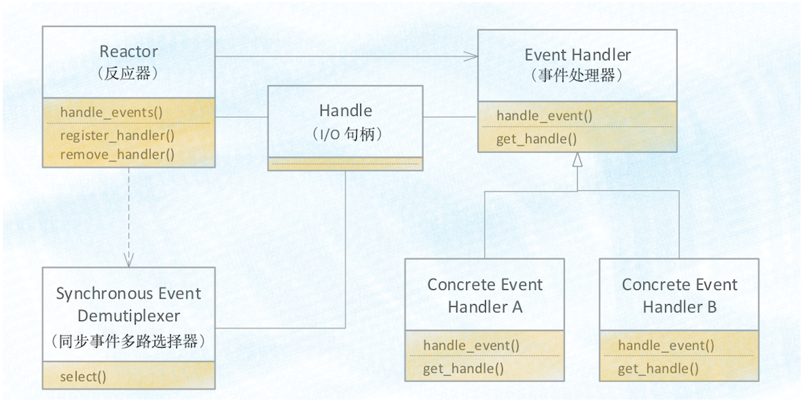
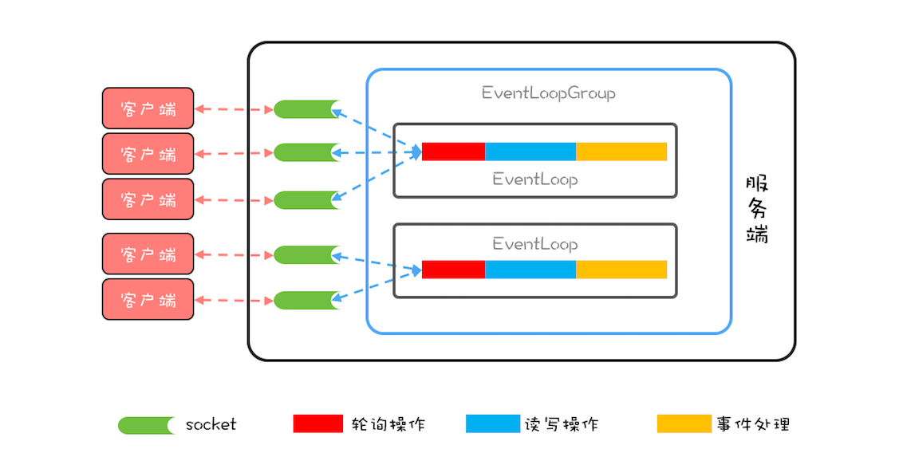

BIO的问题
痛点：因为JAVA和操作系统的BIO操作是阻塞的，也就是说在读操作的时候线程会被阻塞住。
解决方案：
- 利用Thread-Per-Message模式每个IO操作都用一个线程。
- 问题：在java中由于线程对象较重，在链接不多的时候还可以一旦链接很多的场景很块就会出现问题。
Nio和WorkThread模式
我们可以利用WorkThread模式采用线程池来处理这种情况么？答案是BIO不可以因为BIO的IO操作会阻塞线程。这时候就要用到NIO。
NIO的IO操作是不会阻塞线程的：
以select模型为例子，简单来说：当一个IO请求发出后，不会阻塞当前线程，用户态的selecter会一直轮询FD检查是否IO请求的数据是否准备好，内核态会去准备数据，一旦内核态的数据准备好，会通知FD已经准备好
这时候我们的WorkThread可以对这些准备好的FD去处理。
上述这种模式我们叫它Reactor模式
Reactor模式的示例

- Reactor：模式中最重要的类：
- 负责调用操作系统的Selecter.select()函数，获取准备好的io-handlers
- 遍历io-handlers交给EventHandler
- 注册、移除EventHandler
- EventHandler:io请求的逻辑处理类
- Selecter：封装操作系统IO模型的选择器epoll、select
- io-heandler：封装操作系统io请求类
netty

如图：netty中的Reactor类就是EventLoop，Soekcet和Eventloop是稳定的多对1关系，而线程和EventLoop是稳定的1对1关系。绑定关系见源码的register
而eventloop是封装在一个EventLoopGroup中的并且在其中实现了负载均衡。
注意：netty的服务端往往需要俩个EventLoopGroup
- boosGroup用于处理io的链接请求，如果监听一个端口值需要分配一个eventloop否则会浪费
- workGroup处理具体io的操作。
原因是，操作系统的io决定的创建链接后会生成一个新的socker，为了性能我们会将这个socket放在其他的group中。